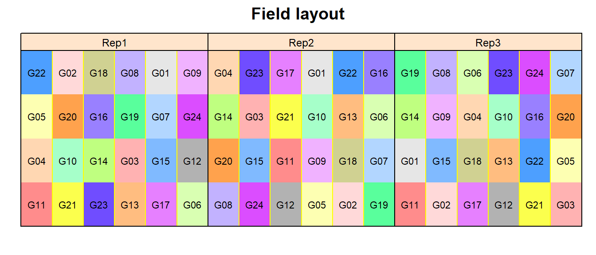

Alpha design
# packages
pacman::p_load(readr, tidyverse, forcats, # data import and handling
lme4, lmerTest, # linear mixed model
emmeans, multcomp, # mean comparisons
ggplot2, desplot) # plotsData
This example is taken from Chapter “3.8 Analysis of an \(\alpha\)-design” of the course material “Mixed models for metric data (3402-451)” by Prof. Dr. Hans-Peter Piepho. It considers data published in John and Williams (1995) from a yield (t/ha) trial laid out as an alpha design. The trial had 24 genotypes (gen), 3 complete replicates (rep) and 6 incomplete blocks (inc.block) within each replicate. The block size was 4.
Import
# data (import via URL)
dataURL <- "https://raw.githubusercontent.com/SchmidtPaul/DSFAIR/master/data/John%26Williams1995.csv"
dat <- read_csv(dataURL)
dat## # A tibble: 72 x 7
## plot rep inc.block gen yield row col
## <dbl> <chr> <chr> <chr> <dbl> <dbl> <dbl>
## 1 1 Rep1 B1 G11 4.12 4 1
## 2 2 Rep1 B1 G04 4.45 3 1
## 3 3 Rep1 B1 G05 5.88 2 1
## 4 4 Rep1 B1 G22 4.58 1 1
## 5 5 Rep1 B2 G21 4.65 4 2
## 6 6 Rep1 B2 G10 4.17 3 2
## 7 7 Rep1 B2 G20 4.01 2 2
## 8 8 Rep1 B2 G02 4.34 1 2
## 9 9 Rep1 B3 G23 4.23 4 3
## 10 10 Rep1 B3 G14 4.76 3 3
## # ... with 62 more rowsFormatting
Before anything, the columns plot, rep, inc.block and gen should be encoded as factors, since R by default encoded them as character.
Exploring
In order to obtain a field layout of the trial, we can use the desplot() function. Notice that for this we need two data columns that identify the row and column of each plot in the trial.
desplot(data = dat,
form = gen ~ col + row | rep, # fill color per genotype, headers per replicate
text = gen, cex = 0.7, shorten = "no", # show genotype names per plot
out1 = rep, # lines between complete blocks/replicates
out2 = inc.block, # lines between incomplete blocks
main = "Field layout", show.key = F) # formatting
An \(\alpha\)-design is a design with incomplete blocks, where the blocks can be grouped into complete replicates. Such designs are termed “resolvable”. The model must have an effect for complete replicates, and effects for incomplete blocks must be nested within replicates.
We could also have a look at the arithmetic means and standard deviations for yield per genotype (gen) or incomplete block (inc.block). Notice that the way the factor variable inc.block is defined, it only has 6 levels (B1, B2, B3, B4, B5, B6). However, as can be clearly seen on the field layout above, there are 18 incomplete blocks, i.e. 6 per replicate. Thus, an actual incomplete block here is identified by the information stored in rep and inc.block. Alternatively, one could have coded the inc.block variable as a factor with 18 levels (B1-B18), but this was not done here.
dat %>%
group_by(gen) %>%
summarize(mean = mean(yield),
std.dev = sd(yield)) %>%
arrange(desc(mean)) %>% # sort
print(n=Inf) # print full table## # A tibble: 24 x 3
## gen mean std.dev
## <fct> <dbl> <dbl>
## 1 G01 5.16 0.534
## 2 G05 5.06 0.841
## 3 G12 4.91 0.641
## 4 G15 4.89 0.207
## 5 G19 4.87 0.398
## 6 G13 4.83 0.619
## 7 G21 4.82 0.503
## 8 G17 4.73 0.379
## 9 G16 4.73 0.502
## 10 G06 4.71 0.464
## 11 G22 4.64 0.432
## 12 G14 4.56 0.186
## 13 G02 4.51 0.574
## 14 G18 4.44 0.587
## 15 G04 4.40 0.0433
## 16 G10 4.39 0.450
## 17 G11 4.38 0.641
## 18 G08 4.32 0.584
## 19 G24 4.14 0.726
## 20 G23 4.14 0.232
## 21 G07 4.13 0.510
## 22 G20 3.78 0.209
## 23 G09 3.61 0.606
## 24 G03 3.34 0.456dat %>%
group_by(rep, inc.block) %>%
summarize(mean = mean(yield),
std.dev = sd(yield)) %>%
arrange(desc(mean)) %>% # sort
print(n=Inf) # print full table## # A tibble: 18 x 4
## # Groups: rep [3]
## rep inc.block mean std.dev
## <fct> <fct> <dbl> <dbl>
## 1 Rep2 B3 5.22 0.149
## 2 Rep2 B5 5.21 0.185
## 3 Rep2 B6 5.11 0.323
## 4 Rep2 B4 5.01 0.587
## 5 Rep1 B5 4.79 0.450
## 6 Rep1 B1 4.75 0.772
## 7 Rep1 B6 4.58 0.819
## 8 Rep3 B1 4.38 0.324
## 9 Rep1 B3 4.36 0.337
## 10 Rep1 B4 4.33 0.727
## 11 Rep3 B3 4.30 0.0710
## 12 Rep1 B2 4.29 0.273
## 13 Rep2 B2 4.23 0.504
## 14 Rep3 B4 4.22 0.375
## 15 Rep3 B5 4.15 0.398
## 16 Rep2 B1 4.12 0.411
## 17 Rep3 B2 3.96 0.631
## 18 Rep3 B6 3.61 0.542We can also create a plot to get a better feeling for the data.
plotdata <- dat %>%
group_by(gen) %>%
mutate(mean_yield = mean(yield)) %>% # add column with mean yield per gen
ungroup() %>%
mutate(gen = fct_reorder(.f = gen, .x = mean_yield)) # sort factor variable by mean yield
ggplot(data = plotdata,
aes(x = gen)) +
geom_point(aes(y = yield, shape = rep)) + # scatter plot observed
geom_point(aes(y = mean_yield), color = "cornflowerblue") + # scatter plot mean
ylim(0, NA) + # force y-axis to start at 0
labs(caption = "Blue dots represent arithmetic mean per genotype") +
theme_classic() # clearer plot format 
Modelling
Finally, we can decide to fit a linear model with yield as the response variable and (fixed) gen and block effects. There also needs to be term for the 18 incomplete blocks (i.e. rep:inc.block) in the model, but it can be taken either as a fixed or a random effect. Since our goal is to compare genotypes, we will determine which of the two models we prefer by comparing the average standard error of a difference (s.e.d.) for the comparisons between adjusted genotype means - the lower the s.e.d. the better.
# blocks as fixed (linear model)
mod.fb <- lm(yield ~ gen + rep +
rep:inc.block,
data = dat)
mod.fb %>%
emmeans(pairwise ~ "gen",
adjust = "tukey",
lmer.df = "kenward-roger") %>%
pluck("contrasts") %>% # extract diffs
as_tibble %>% # format to table
pluck("SE") %>% # extract s.e.d. column
mean # get arithmetic mean## [1] 0.2766288# blocks as random (linear mixed model)
mod.rb <- lmer(yield ~ gen + rep +
(1 | rep:inc.block),
data = dat)
mod.rb %>%
emmeans(pairwise ~ "gen",
adjust = "tukey",
lmer.df = "kenward-roger") %>%
pluck("contrasts") %>% # extract diffs
as_tibble %>% # format to table
pluck("SE") %>% # extract s.e.d. column
mean # get arithmetic mean## [1] 0.2700388As a result, we find that the model with random block effects has the smaller s.e.d. and is therefore more precise in terms of comparing genotypes.
ANOVA
Thus, we can conduct an ANOVA for this model.
## Type III Analysis of Variance Table with Satterthwaite's method
## Sum Sq Mean Sq NumDF DenDF F value Pr(>F)
## gen 10.6786 0.46429 23 34.736 5.4478 4.376e-06 ***
## rep 1.5703 0.78513 2 10.394 9.2124 0.004992 **
## ---
## Signif. codes: 0 '***' 0.001 '**' 0.01 '*' 0.05 '.' 0.1 ' ' 1As can be seen, the F-test finds the gen effects to be statistically significant (p < 0.05).
Mean comparisons
mean_comparisons <- mod.rb %>%
emmeans(pairwise ~ "gen",
adjust = "tukey",
lmer.df = "kenward-roger") %>%
pluck("emmeans") %>%
cld(details = TRUE, Letters = letters) # add letter display
mean_comparisons$emmeans # adjusted genotype means## gen emmean SE df lower.CL upper.CL .group
## G03 3.50 0.199 44.3 2.85 4.15 ab
## G09 3.50 0.199 44.3 2.85 4.15 a c
## G20 4.04 0.199 44.3 3.39 4.69 abcd
## G07 4.11 0.199 44.3 3.46 4.76 abcd
## G24 4.15 0.199 44.3 3.50 4.80 abcd
## G23 4.25 0.199 44.3 3.60 4.90 abcd
## G11 4.28 0.199 44.3 3.63 4.93 abcd
## G18 4.36 0.199 44.3 3.71 5.01 abcd
## G10 4.37 0.199 44.3 3.72 5.02 abcd
## G02 4.48 0.199 44.3 3.83 5.13 abcd
## G04 4.49 0.199 44.3 3.84 5.14 abcd
## G22 4.53 0.199 44.3 3.88 5.18 abcd
## G08 4.53 0.199 44.3 3.88 5.18 cd
## G06 4.54 0.199 44.3 3.89 5.19 b d
## G17 4.60 0.199 44.3 3.95 5.25 d
## G16 4.73 0.199 44.3 4.08 5.38 d
## G12 4.76 0.199 44.3 4.11 5.40 d
## G13 4.76 0.199 44.3 4.11 5.41 d
## G14 4.78 0.199 44.3 4.13 5.42 d
## G21 4.80 0.199 44.3 4.15 5.44 d
## G19 4.84 0.199 44.3 4.19 5.49 d
## G15 4.97 0.199 44.3 4.32 5.62 d
## G05 5.04 0.199 44.3 4.39 5.69 d
## G01 5.11 0.199 44.3 4.46 5.76 d
##
## Results are averaged over the levels of: rep
## Degrees-of-freedom method: kenward-roger
## Confidence level used: 0.95
## Conf-level adjustment: sidak method for 24 estimates
## P value adjustment: tukey method for comparing a family of 24 estimates
## significance level used: alpha = 0.05Present results
Mean comparisons
For this example we can create a plot that displays both the raw data and the results, i.e. the comparisons of the adjusted means that are based on the linear model.
ggplot() +
# black dots representing the raw data
geom_point(
data = plotdata,
aes(y = yield, x = gen)
) +
# red dots representing the adjusted means
geom_point(
data = mean_comparisons$emmeans,
aes(y = emmean, x = gen),
color = "red",
position = position_nudge(x = 0.1)
) +
# red error bars representing the confidence limits of the adjusted means
geom_errorbar(
data = mean_comparisons$emmeans,
aes(ymin = lower.CL, ymax = upper.CL, x = gen),
color = "red",
width = 0.1,
position = position_nudge(x = 0.1)
) +
# red letters
geom_text(
data = mean_comparisons$emmeans,
aes(y = lower.CL, x = gen, label = .group),
color = "red",
angle = 90,
hjust = 1,
position = position_nudge(y = - 0.1)
) +
ylim(0, NA) + # force y-axis to start at 0
ylab("Yield in t/ha") + # label y-axis
xlab("Genotype") + # label x-axis
labs(caption = "Black dots represent raw data
Red dots and error bars represent adjusted mean with 95% confidence limits per genotype
Means followed by a common letter are not significantly different according to the Tukey-test") +
theme_classic() # clearer plot format 
Please feel free to contact me about any of this!
schmidtpaul1989@outlook.com